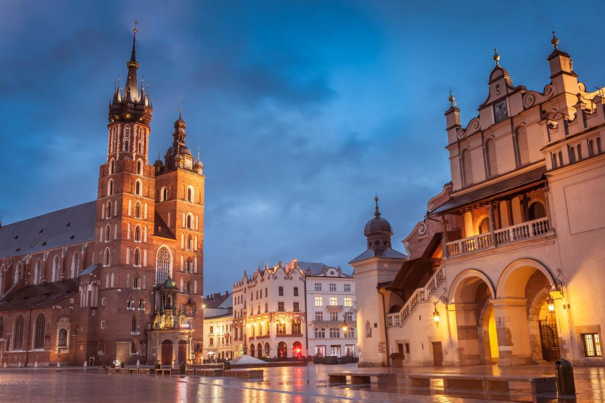

if you want to discover the city of krakow you are at the right place !
Kraków , also spelled Cracow or Krakow, is the second largest and one of the oldest cities in Poland. Situated on the Vistula River in the Lesser Poland region, the city dates back to the 7th century. Kraków was the official capital of Poland until 1596 and has traditionally been one of the leading centres of Polish academic, economic, cultural and artistic life. Cited as one of Europe's most beautiful cities, Its Old Town was declared a UNESCO World Heritage Site.
The Castle of Wawel:The Wawel Castle is a castle residency located in central Kraków, Poland. Built at the behest of King Casimir III the Great, it consists of a number of structures situated around the Italian-styled main courtyard. The castle, being one of the largest in Poland, represents nearly all European architectural styles of medieval, renaissance and baroque periods. The Wawel Royal Castle and the Wawel Hill constitute the most historically and culturally significant site in the country. In 1978 it was declared a UNESCO World Heritage Site as part of the Historic Centre of Kraków.